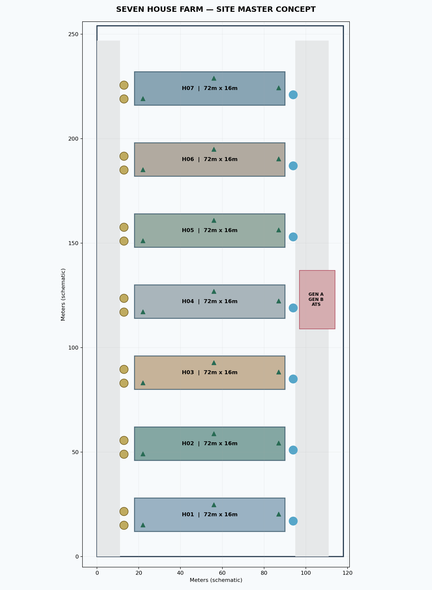
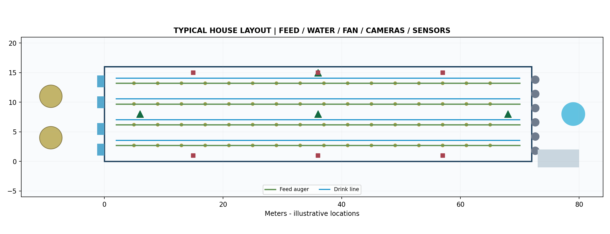

كتيب أولي للمستخدم والفني ومهندس التحكم
تاريخ الإصدار: 28 أكتوبر 2026
نوع الملف: تصميم مفاهيمي / تعليمات تنفيذ ومراجعة
ليس مخطط تنفيذ معتمداً، ولا برنامج حماية حرجاً، ولا رخصة لتشغيل الحظيرة الحقيقية. يجب إقرار المخططات والأحمال والسلامة من مهندس مؤهل وتجربة FAT/SAT.
يستخدم المشروع منصة Three.js مع تطبيق Tauri قابل للبناء لويندوز، وبوابة Python منفصلة لتلقي القياسات المؤرشفة بوسم الحضيرة ومصدرها. لا توجد اتصالات فعالة بأجهزة ميدانية ضمن هذه النسخة.
| المتغير | القيمة التخطيطية |
|---|---|
| عدد الحضائر | 7: H01 إلى H07 |
| الأبعاد الاسمية | 72 م طول × 16 م عرض لكل حضيرة |
| القطيع الافتراضي | 15,000 طير في الحضيرة × 7 = 105,000 |
| الطيور المرئية | 150 نموذج GLB أبيض لكل مشهد نشط، وليس 15,000 نموذج |
| المعدات المرسومة | 4 خطوط معالف، 4 خطوط ماء، 6 مراوح سحب، 4 أقسام تبريد، سايلوان وخزان لكل حضيرة |
| الطاقة الاحتياطية | مولدان مشتركان في مخطط الموقع، سعة كل منهما غير محددة |
| الأجهزة | كاميرات IP وقياسات بيئية وضغط وتدفق مع Feed/Water level |
تعتمد درجة الحرارة المرجعية على منحنى تدريبي داخل الكود. لا يمكن استخدامه كمنحنى إنتاجي لسلالة معينة قبل معايرة المناخ والتغذية والتكدس وإرشادات الطبيب البيطري.

وُزّعت الحضائر بمسافة تخطيطية 18 متر بين نهايات العرض، مع طريقي خدمة على الطرفين. السايلوات وخزانات المياه قرب جانب الخدمة، والمولدات في ساحة مرافق منفصلة. اتجاه الشمال الحقيقي غير محدد؛ ويجب تأكيد اتجاه الرياح ومداخل الهواء ومخارج العادم قبل اعتماد المواقع.
المخطط الأصلي القابل للتحرير: docs/cad/SITE_MASTER_7_HOUSES_CONCEPT.dxf. كما أُرفقت ملفات H01... حتى H07... لكل مسقط مستقل، مع طبقات كاميرات وحساسات وتغذية وماء وكهرباء.

| العنصر | الموقع المقترح | متطلب التحقق |
|---|---|---|
| المراوح | نهاية الحظيرة عند الطول 72م | حساب سعات المراوح وتوازن الضغط |
| Cooling Pads | بداية الحظيرة المقابلة | حساب مساحة الباد والتدفق ومعالجة المياه |
| المعالف | 4 خطوط طولية معلقة | ارتفاعها وعدد الأطباق/الكثافة |
| خطوط Nipple | 4 خطوط طولية موازية | التدفق والضغط والشطف والتعقيم |
| كاميرات | 4 نقاط نموذجية من أعلى | اختبار تغطية FoV والإضاءة الليلية |
| الحساسات | 3 نقاط طولية × جهتين | الارتفاع والعزل والمعايرة وفق الدليل |
SIMULATION حتى لا يعد قياساً حقيقياً.تُعرض حضيرة واحدة في العارض في كل مرة لتجنب إجهاد بطاقة الرسوميات المدمجة. عند اختيار حضيرة جديدة تظهر خصائصها ودرجة لون سقفها. الطيور المرئية بيضاء؛ مسار مشي تقريبي مع حركة أقدام برمجية بسيطة. مجسمات الدجاج المرفوعة لا تحتوي على rig أو animation clips، لذا لن يكون المشي التشريحي الكامل متاحاً حتى استبدالها بنموذج rigged ومدقق.
المعماريّة المفضلة: أجهزة الحقل → PLC خاص بكل حضيرة أو Remote I/O معتمد → شبكة صناعية منفصلة → بوابة READ-ONLY محلية → قاعدة بيانات SQLite/HMI. يتم تطبيق الترشيح والمعايرة على المتحكم أو بوابة القياس الموثوقة.
| القياس | نوع إشارة محتمل | فحص موقعي مطلوب |
|---|---|---|
| TT/RH | 4–20mA أو Modbus RS-485 | مدى القياس، الحرارة، الرطوبة، وأرقام السجلات |
| CO₂ وNH₃ | 4–20mA أو Modbus | معايرة صفر/Span ودقة المستشعر ومجال التطبيق |
| مياه/ضغط/تدفق | Pulse/4–20mA/Modbus | تحويل وحدات الضغط والنبض والتدفق |
| سايلو/خزان | Load cell / level transmitter | الوزن النوعي وقياس الصفر والحد الأعلى |
| حالة مروحة/VFD | Feedback relay/Modbus | التفريق بين أمر التشغيل والدوران الفعلي |
إنشاء سجل حقيقي: في field_gateway/hardware_map.template.json ضع عنوان الجهاز ونوع البيانات وعنوان السجل من كتالوج الشركة. المداخل المقترحة مجرد أمثلة وغير صالحة لأي جهاز دون دليل المورّد. يجب إعداد موصل الاستطلاع للنوع الحقيقي وعدم الاتصال المباشر بواجهة PLC غير محمية.
python field_gateway/server.py # For reading dashboard only: GET http://127.0.0.1:8777/api/houses # Incoming trusted readings require X-Fleet-Token POST http://127.0.0.1:8777/api/ingest
أضف 3 إلى 4 كاميرات IP في كل حضيرة حسب ارتفاع السقف ومناطق الظلال: تكون ثابتة ومحمية من الغبار والتكاثف؛ يُفضّل PoE وNVR محلي، مع اختبار ONVIF/RTSP وفق موديل الكاميرا. يجب تعيين معرف فريد: H01-CAM-01 ... H07-CAM-04، ولا تحفظ كلمات السر في GitHub.
النسخة الحالية تتضمن البنية السابقة لـVision Studio وبوابة قياسات جديدة معنونة بحسب الحضيرة؛ الربط الكامل بين NVR/RTSP ومحرك كشف متحقق ونموذج مشي هيكلي لا يزال مرحلة هندسية تالية.
| اختبار | المعيار |
|---|---|
| اختيار H01-H07 | عرض بيانات الحضيرة المحددة دون التأثير في حالة البقية |
| 150 طيراً مرئياً | عند جودة عالية ووجود GPU مناسب؛ في الوضع المتوازن أقل للحفاظ على الأداء |
| الحساسات | مصدر قياس حقيقي واضح وأثر زمني؛ لا تُستبدل البيانات المفقودة بصمت |
| الأعطال | انتقال الإنذار إلى سجل الأحداث دون تأخير غير مبرر |
| الكاميرات | تغطية/إضاءة/خصوصية وتقييم دقة النموذج على بيانات مستقلة |
| الملف | المحتوى |
|---|---|
src/fleet.js | الحضائر السبع وحالاتها المستقلة |
src/fleet-ui.js | لوحة الحضائر المركزية |
src/scene.js | المشهد ثلاثي الأبعاد والحركة البصرية |
field_gateway/server.py | استقبال قياسات حقيقية أو تجريبية ضمن schema مؤرخ |
docs/cad/*.dxf | ثمانية مخططات AutoCAD/DXF مفاهيمية |
docs/Sensor_Camera_Registry.csv | سجل حساسات وكاميرات الحضائر |
vision/ | طبقة تجارب الرؤية الحاسوبية القديمة |
Siemens S7-1200 Functional Safety: Siemens Manual
ROSS Broiler Management Handbook 2025: Aviagen
ONVIF Profile S: ONVIF
Tauri Windows Installer: Tauri